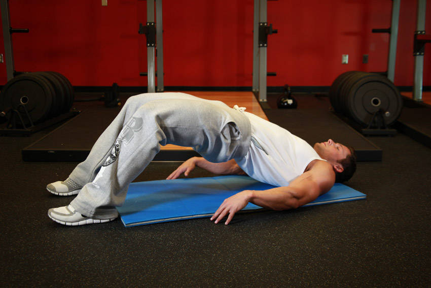

- Lie flat on the floor on your back with the hands by your side and your knees bent. Your feet should be placed around shoulder width. This will be your starting position.
- Pushing mainly with your heels, lift your hips off the floor while keeping your back straight. Breathe out as you perform this part of the motion and hold at the top for a second.
- Slowly go back to the starting position as you breathe in.